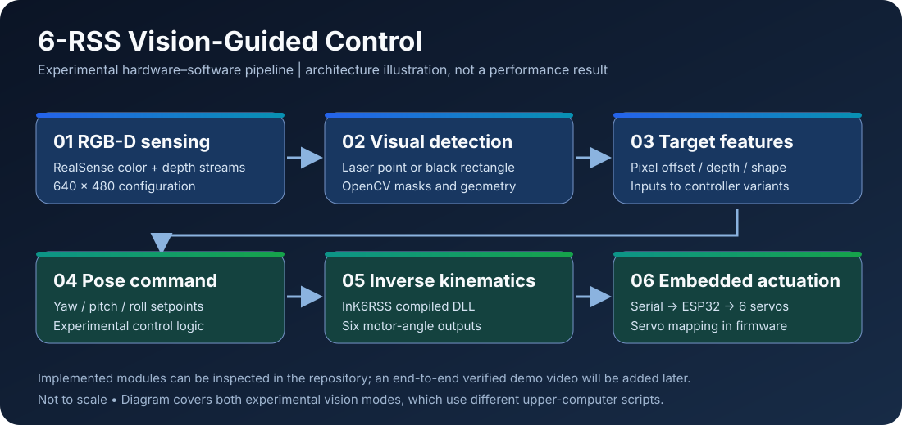

01 / SENSING◉
RGB-D perception
Color and depth streams from a RealSense device support target segmentation, contour processing, and estimated spatial offsets.
ROBOTICS SYSTEMS / ENGINEERING SHOWCASE
A six-actuator parallel platform connecting RGB-D perception, geometric control, inverse kinematics, and real-world servo actuation.
An experimental hardware–software prototype documenting how sensing, computation and embedded control come together.
Source-documented architecture · Real-hardware video pending
Servo actuation via ESP32
Laser target & rectangle vision
Color and depth perception
Experimental engineering prototype. No measured tracking benchmark is claimed.
The full-system video will be added after reviewing the original recording. No synthetic footage is used to imply an actual test.
Original project recording will appear here.
A modular path from a perceived scene to actuator commands. Explore two distinct vision-driven experiments recorded in the source tree.
A red/white feature detector uses color and depth measurements to estimate a laser target's position. An experimental upper-computer controller converts offsets into orientation commands.
Open the architecture diagram for the component-level view and the caveats attached to each interface.
Read architecture notes
The engineering task crosses hardware, perception, kinematics and communication boundaries. Each module is traceable to source files.
Color and depth streams from a RealSense device support target segmentation, contour processing, and estimated spatial offsets.
Tkinter interfaces expose serial connection, detection controls, measurement readouts and prototype motion commands.
A compiled native solver accepts a commanded platform pose and returns six motor-angle values through a ctypes interface.
The PC sends framed six-angle messages over serial; ESP32 firmware maps the received angles to six servo outputs.
# Example of the framed format — not a live command streamS,angle1,angle2,angle3,angle4,angle5,angle6,E# Configured firmware baud rate: 115200Browse the archived prototype, examine subsystem implementations, or inspect the accompanying code audit. Historical scripts are preserved and are not all verified release versions.
Scope & reproducibility. The website documents code-level design and experimental implementations. A validated end-to-end hardware replay, safety certification, accuracy/latency benchmarks and native DLL redistribution rights are not established here. The robot schematic is conceptual; no real hardware photograph or test video is implied.